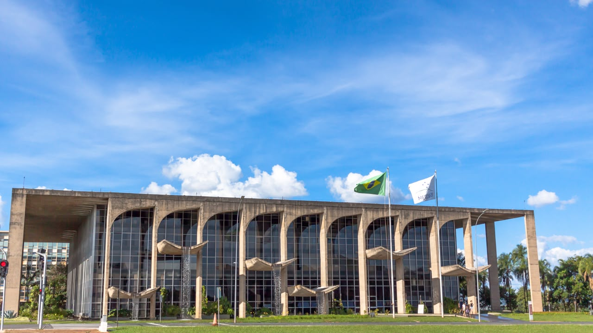

Um país
em cores
&
concreto
Que Brasil era
esse em 1968?
A Tropicália foi um movimento cultural que ganhou força entre 1967 e 1968. Na música, nas artes e no comportamento, artistas misturavam referências brasileiras com rock, cultura pop e experimentação.
Ao mesmo tempo, o país vivia a ditadura militar. Essa combinação de criatividade, conflitos e vontade de mudança marcou a época.
Palácio da
Justiça
Um marco da arquitetura moderna brasileira, localizado na Esplanada dos Ministérios, em Brasília.

Onde fica?
Endereço: Esplanada dos Ministérios, Bloco T, Brasília - DF, CEP 70064-900.
Quando foi inaugurado?
O projeto foi desenvolvido em 1962, e o prédio foi inaugurado em 3 de julho de 1972. Os jardins internos e externos foram projetados por Roberto Burle Marx.
3 de julho de 1972
Quem projetou?
O Palácio da Justiça Raymundo Faoro, em Brasília, foi projetado pelo arquiteto Oscar Niemeyer, um dos maiores nomes da arquitetura brasileira e responsável por diversos edifícios icônicos da capital federal.
Uma curiosidade: o palácio é conhecido como Palácio das Cascatas por causa dos jogos de água na fachada, uma das características mais marcantes do projeto de Niemeyer.
Arte que
quebra regras
Tropicália
Experimentava com sons, imagens e ideias, misturando o popular e o moderno para provocar o público.
Palácio da Justiça
Usava formas modernas e materiais como vidro e concreto, transformando um espaço importante da cidade.
Não são a mesma coisa, mas os dois ajudam a entender um período de grandes mudanças culturais, políticas e visuais no Brasil.
-assista ao-